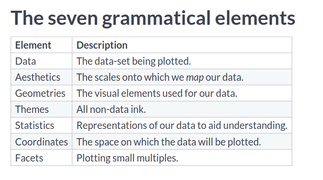
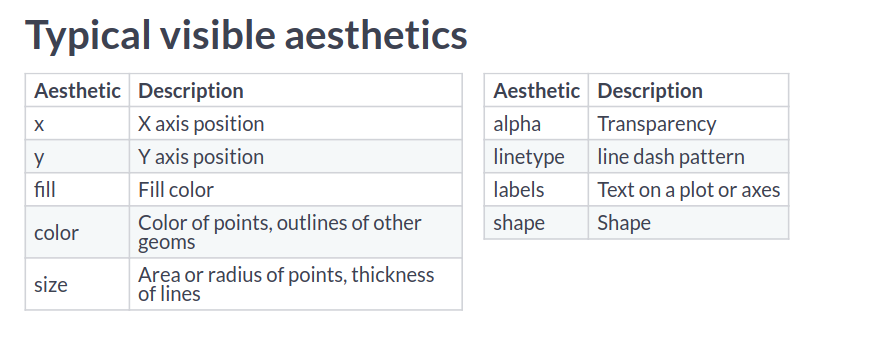
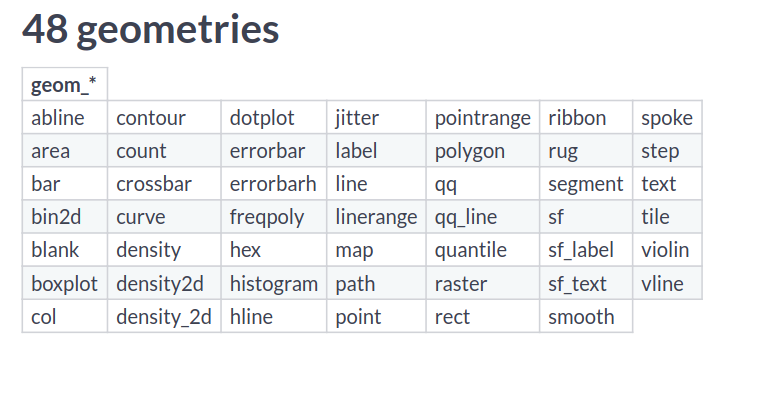
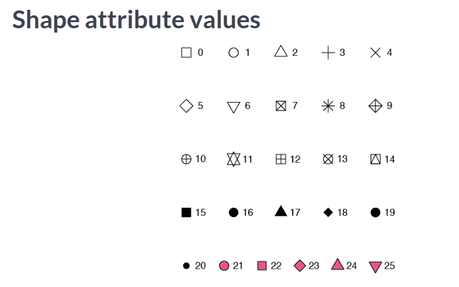

TODO Clarify what dodge actually does alongside jitter together
TODO Understand differences in facet types: wrap, grid, margins.
Ggplot Basics
Components
Data to Plot
Aesthetics
Plot additional properties [ Added with + sign]
Aesthetics Parameters
Color: Set a color based on specific category. e.g. continents in case of gapminder data
Size: Make points sized base on some value of dataframe. e.g. by population or by gdp
Faceting: This is used outside aes as facet_wrap( ~ property ). Here ~ means by category and facet wrap separates the individual plots based on the facet property. e.g. If you facet by continents, then individual continents will be plotted separately.
Types of plot
Scatter Plot:
Plot based on points. Use +geom_point() to make a scatter plot.
Line Plot:
Plot lines. Use +geom_line() to make line plot.
Bar Plot:
Plot bar graphs. Use +geom_col() to make bar plots.
Histogram Plot:
Plot histogram for plots. Use +geom_histogram() to make histogram plot.
Box Plot:
Plot box plots. Use +geom_boxplot() for boxplots.
Additional Notes
On plotting many values don’t start from 0. So to make plot start from 0 in different axes, expand_limits(y=0) can be used.
To scale axes like making axis logarithmic, even_x_log10() In this way
Ggplot In Depth
Beginners
General Notes
Bar Plots
geom_bar(position="dodge")
This results in bar plot where categorical data is shown side by side rather than stacked on top of one another.
Point Plots
Line Plots
Jitter Points
geom_jitter()
geom_point(position="jitter")
Both the lines do the same thing. This function add small amount of random variation to location of each point which helps to handle overplotting caused by smaller datasets.
Best Practics in Aesthetics
Efficiency vs Accuracy
Form follows function:
Primary function: Accurate and efficient representations.
Secondary function: Visually appealing and beautiful plot
Grammatical Components :ATTACH:
ID: 6de41dc8-f180-4508-8ef8-7daa18dc649f

These are the layers in which we work with plots. They are layered to make dependency as least as possible.
Aesthetics Layer
Aesthetics Parameters :ATTACH:
ID: 32eb25cb-81d9-4eb4-aa1e-23533f438855

The aesthetics properties are used inside aes() function to create different kind of plots with same set of data.
In cases you want to have properties of lines or points with something from the data itself, you can call aes() inside geom functions.
geom_point(aes = col_1)
NOTE: label and shape are used only with categorical variables.
You can define colors in hexadecimal and then use that variable with color value as well.
To use rownames for geom_text plots, we can use label = rownames(tbl_name). In this way a plot can be made with rownames visible in the plot.
You can arithmetically operate two columns in plotting different numerical aesthetics such as size.

So , we have many different kind of plots to use.
For every geometry, there will be some essential as well as some optional parameters to be passed on.
For eg. In scatter plots, you need (x,y) but also can pass aesthetic mappings such as color, alpha, size, shape and so on.
Point Plots
Some Shape Attribute Values:

geom_point(shape=".")
This line adds a point as a pixel and can be useful in cases of large datasets.
Consider Overplotting in following cases:
Large datasets
Aligned values on a single axis
Low-precision data
Integer data
Recommended is using transparency when using solid shapes. Or choose something opaque but hollow. For a bigger dataset, there may be so many points: so consider using small sized points.
When you can work with default values, you don’t need to have functions for position. But when you have to specify additional arguments to work with the plots, then you use the functions such as position_jitter() as used in the block above.
Histograms
geom_histogram()
geom_histogram(binwidth =0.1,
center =0.05,
position ="stack")
Position variables:
stack (the default): Bars for different groups are stacked on top of each other.
dodge: Bars for different groups are placed side by side.
fill: Bars for different groups are shown as proportions.
identity: Plot the values as they appear in the dataset.
Bar Plots
geom_bar()
geom_col()
geom_count()
geom_errorbar(aes(ymin= sth, ymax=sth)) # ymin and ymax for plotting error lines.
Position variables;
stack: The default
dodge: Preferred
fill: To show proportions
Comparison between geom_bar and geom_col:
The function geom_col() is just geom_bar() where both the position and stat arguments are set to “identity”. Understanding this, it helps to use these two with ease.
Theme function contains all these elements and can be changed. But we don’t need to change all the elements: instead we use the hierarchy of data such as text, title and modify all elements within them as well.
Moving legend field
Legend field can be moved to any position in the plot using legend.position parameter inside theme layer. The various values that legend.position can take are as follows:
Top
Bottom
Left
Right
None
A point in the form of c(x,y) where c(0,0) means bottom left and c(1,1) means top right.
Working with different elements
element_text()
element_line()
element_rect()
element_blank()
If you want to set something to None, you should set that element to element_blank(). For customizing anything, you first have to know which element group it belongs to and then you can use these methods to change it’s visual appeal.
labs(title ="Title goes here",
caption ="Caption at the bottom end")
Add a vertical or horizontal line
geom_vline(xintercept = any_value, color ="color_name", linetype =2)
You can specify parameters similar to geom_line() to plot these line into the existing plot.
To add text by the line we can use:
annotate(
"text",
x=sth , y =sth,
x_end = sth, y_end = sth,
label ="This is the text to show",
color ="red" )
# To display a nice arrow alsoannotate(
"curve",
x = sth, y=sth,
x_end = sth, y_end = sth,
arrow =arrow(length =unit(), type ="sth"),
color ="red")
Doing this we can have a nice arrow and a nice text that goes alongside the line that we add into the plot or anywhere in the plot we want to show something noticeable.
Intermediate
Stats Layer
Know that the stats layer and geom layer are related to each other. Calling stat_boxplot() might call geom_boxplot() by default. Knowing these connections will help build a better understanding and when to use one or the other.
scale_size(range = c(range_st, range_end))
mean_sdl function to get mean ans standard deviation from data.
By default, the error interval is shown using the plot. We can change it using parameter se. For what we want to draw, we can change the method to fit data points. The second line on the code snippet uses linear method to make the plot.
These functions can be called many times in the same plot as well.
Parameters:
size : To determine line width
Use aes() to use color, fill and so on if needed.
Sum and Quantile
geom_count() and stat_sum() are same.
Stat Summary
Parameters:
fun.data : Takes a function to give you data to plot summary.
fun.args : If you need to pass extra arguments, just pass them via a list.
position : Optional and similar to previous plots.
geom : Which geom to use.
“pointrange” : Just plots the end points of the start and end.
“errorbar” : Plots the horizontal lines at the start and end.
stat_summary(fun.data = mean_sd,
fun.args =list(mult=1),
extra_args_here)
stat_summary(fun.data = mean_cl_normal,
fun.args =list(conf.int =0.8))
stat_summary(fun.y ="mean",
geom ="bar") # plots a bar plot using function mean
Here the confidence interval is set to 80% when drawing those bars.
coord_fixed() # 1:1 ratiocoord_fixed(0.055) # flatten it
Expand and Clip
coord_*(expand = val)
coord_*(clip = val)
Setting expand = 0, sets a buffer margin around the plot so that the axes and data don’t overlap. Setting clip = “off” sets clipping to off when we expand the limits.
Both of these commands work the same. We have scale_ commands to scale axes as well as coordinate translate functions for the job as well.
Adding a seconday axis:
sec_axis(trans =NULL,
name ="sth",
breaks = list_of_first_axis_to_reference,
labels = list_of_second_axis_mapped_to_reference_axis)
y_breaks =c(1,2,3)
y_labels = y_breaks +9# so we will have these values mapped to secondary axis.
Flip coordinates
coord_flip()
Projections
Mercator Projection: Project objects around the equator as bigger than that at the poles
Polar Projection is also alternative to mercator projection.
Bar chart can be converted to pie chart by converting cartesian to polar coordinates.
coord_polar(theta ="y")
coord_polar(start =-pi/4) # helpful to set the start of the plot.
Facets Layer
Splitting of data plots into different plots to make comparisons.
facet_grid(rows =vars(col_name), cols =vars(col_name))
facet_grid(col_name ~ .) # same as specifying rows = vars(col_name)facet_grid(. ~ col_name) # same as specifying cols = vars(col_name)facet_grid(col_1 ~ col_2) # same as specifying first rows and then columns.
table_name$new_col_name =factor(table_name$old_col_name, labels =c(`oldRowVal1` ="newRowVal"),
`oldRowVal2` ="newRowVal2"))
# to order the labelsfactor(similar, levels =c("val_1", "val_2"),
labels =c("new_val", "new_val"))
For example we may have split by some value. We can rename those specific values using factor so that the plot gets better labels now. This will be pretty useful when we want to have labels which are numbers representing certain quantities. In plots, numbers will not be so useful and can be replaced by their respective meaning to give more information via the plot.
Generally facets have the same scale of axes even if the range is unused by the facet. In case of free, every facet has different axes. With free_x or free_y, the axis that facet can freely change is either x or y.
Changing size of facets based on the data scales
Often in having categorical data, we may have to make some plots bigger than the others in facets to accurately present information. To do this we use parameter space. This helps to change the scale of plots in between facets.
Now, When facets are being created, only the values that are significant will be on either x or y axis meaning our plots to be less emptier and also fit according to number of points.
Different kind of facet Facet_wrap:
facet_wrap(vars(col_name))
facet_wrap(~ col_name)
facet_wrap(~ col_name, ncol = NumCols) # You can specify how many subsets you want to plot along in one dimension.
Generally used when categorical variable has too many groups/levels. Facet_wrap rather than having rows and columns unlike facet_grid, it separates levels along one axis and wraps all subsets across a given number of rows or columns.